(-), que nasceu no , entrou para a história como o inventor do jogo do , para a qual ele deu originalmente o nome de "Minnonette.” Morgan realizou seus estudos de graduação da escola de Springfield da ACM (Associação Cristã de Moços), onde conheceu , que, em , inventou o basquetebol.
William George Morgan foi o inventor do voleibol, originalmente chamado "Mintonette", nome derivado do jogo badminton que ele resolveu mudar para melhor refletir a natureza do esporte.

1870 foi um ano comum do século XIX do actual Calendário Gregoriano, da Era de Cristo, e a sua letra dominical foi B, teve início a um sábado e terminou também a um sábado.

1842 foi um ano comum do século XX que começou numa quinta-feira, segundo o calendário Gregoriano. A sua letra dominical foi D. A terça-feira de Carnaval ocorreu a 17 de fevereiro e o domingo de Páscoa a 5 de abril.
Nova Iorque ou Nova York é um dos 50 estados dos Estados Unidos, localizado na Região nordeste do pais. É o maior centro financeiro e comercial do pais, e o quarto maior centro industrial dos Estados Unidos, atrás apenas de Califórnia, Texas e Ohio.
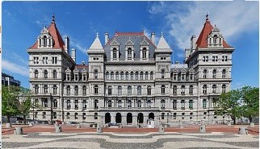Volei é um esporte praticado numa quadra dividida em duas partes por uma rede, possuindo duas equipes de seis jogadores em cada lado. O voleibol foi originalmente chamado de Mintonette, devido à sua semelhança com o Badminton.
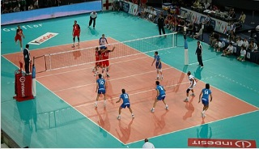James Naismith foi um professor de educação física canadense e inventor do basquetebol.
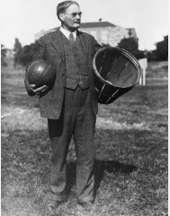1896 foi um ano bissexto do actual Calendário Gregoriano e as suas letras dominicais foram E e D, teve início a uma quarta-feira e terminou a uma quinta-feira.
Após graduar-se, Morgan passou seu primeiro ano na ACM de , após o qual, durante o verão de , mudou-se para a ACM de , onde se tornou diretor de . Nessa função ele teve a oportunidade de estabelecer, desenvolver e dirigir um vasto programa de exercícios e aulas de esporte para adultos do sexo masculino.
Auburn é uma cidade localizada no estado Americano do Maine, no Condado de Androscoggin. Foi fundada em 1786, e incorporada em 1868.
1895 foi um ano comum do século XIX do actual Calendário Gregoriano, da Era de Cristo, a sua letra dominical foi F, teve início a uma terça-feira e terminou também a uma terça-feira.
Holyoke é uma cidade dos Estados Unidos da América no Estado de Massachusetts, localizada no Condado de Hampden.
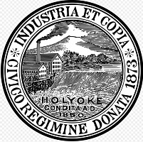Educação Física é uma área do conhecimento humano ligada às práticas corporais historicamente produzidas pela humanidade. A Educação Física é o processo pedagógico que visa à formação do homem capaz de conduzir-se plenamente em suas atividades.
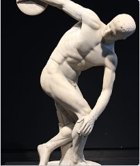Sua liderança não foi muito bem aceita e suas classes cresceram em números pequenos. Ele veio a perceber que precisava de um certo tipo de jogo recreativo competitivo a fim de variar o seu programa. O basquetebol, um desporto que começava a se desenvolver, parecia que se adequava aos jovens mas era necessário encontrar uma alternativa menos violenta e menos intensa para os membros mais velhos.
Naquela época, Morgan não sabia de nenhum jogo semelhante ao voleibol que poderia guiá-lo; ele o desenvolveu a partir de seus próprios métodos de treinamento esportivo e sua experiência prática no ginásio da ACM. Descrevendo suas primeiras experiências ele disse:
"Em busca de um jogo apropriado, o tênis me ocorreu, mas para isso são necessários raquetes , bolas, equipamentos de rede e outros e por isso foi eliminado, mas a ideia de uma rede parecia uma boa. Nós a elevamos a uma altura de cerca de 6 metros, 6 polegadas (1,98 metros) a partir do solo, logo acima da cabeça de um homem médio. Precisávamos de uma bola e entre aquelas que tentamos foi uma câmara de basquete, mas isso era muito leve e muito lenta. Por isso, tentei a de basquete em si, que era muito grande e muito pesada."
No final, Morgan solicitou à firma MG Spalding & Bros para fazer uma bola, o que fizeram em sua fábrica perto de , no estado de . O resultado foi satisfatório: a bola foi revestida em couro com um tubo de borracha interior; a sua circunferência não foi inferior a 25 nem superior a 27 polegadas (63,5 cm e 68,6 centímetros, respectivamente), e seu peso não inferior a 252 e não mais de 336 gramas.
Chicopee é uma cidade situada às margens do Rio Connecticut no condado de Hampden no estado estadounidense de Massachusetts.
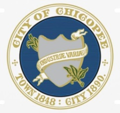Massachusetts é um dos 50 estados dos Estados Unidos, localizado na região da Nova Inglaterra. É o sexto menor estado em área e o 13º estado mais populoso do país, sendo o terceiro mais densamente habitado dos Estados Unidos.
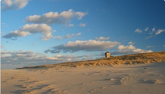Morgan pediu a dois de seus amigos de Holyoke, Dr. Frank Wood e John Lynch, a elaborar (com base em suas sugestões) os conceitos básicos do jogo, juntamente com as primeiras 10 regras.
No início de 1896 uma conferência foi organizada na faculdade da ACM em Springfield, reunindo todos os Conselheiros de Educação Física da ACM. Dr. Luther Halsey Gulick, diretor da escola de formação profissional de Educação Física (e também diretor-executivo do Departamento de Educação Física do Comitê Internacional da ACM) convidou Morgan para fazer uma demonstração de seu jogo no estádio novo da faculdade. Morgan formou duas equipes, cada uma composta por cinco homens (e alguns fãs leais) para Springfield, onde a manifestação foi feita diante dos delegados da conferência no ginásio do leste. O capitão de uma das equipes foi JJ Curran e da outra John Lynch, que foram, respectivamente, prefeito e chefe do Corpo de Bombeiros de Holyoke.
Morgan explicou que o novo jogo foi desenhado para ginásios ou salas de exercícios mas que também pode ser jogado a céu aberto. Um número ilimitado de jogadores podem participar e o objetivo do jogo é manter a bola em movimento sobre uma rede alta, de um lado para o outro.
Depois de ver a demonstração e ouvir as explicações de Morgan, o professor Alfred T. Halstead chamou a atenção para a ação, ou a fase de agir, de voo da bola, e propôs que o nome "Mintonette" fosse substituída por "Volley Ball". Este nome foi aceito por Morgan e pela conferência.
Morgan explicou as regras e trabalhou nelas e então deu uma cópia manuscrita para a conferência de diretores de Educação Física da ACM, como um guia para o uso e desenvolvimento do jogo. Uma comissão foi nomeada para estudar as regras e produzir sugestões para a promoção do jogo e do ensino.
Um breve relato sobre o novo jogo e suas regras foi publicado na edição de julho de 1896 da publicação "Educação Física" e as regras foram incluídas na edição 1897 do guia oficial da primeira Liga Atlética Norte-Americana da ACM.
Crescimento mundial
Os diretores de Educação Física da ACM, incentivados principalmente por duas escolas profissionais de Educação Física, a Faculdade de Springfield, em Massachusetts e o George Williams College, em (agora em Downers Grove, ), adotaram o voleibol em todos os seus clubes nos , (em 1900, o Canadá se tornou o primeiro país estrangeiro a adotar o jogo) e também em muitos outros países: Elwood S. Brown, nas (1910), J. Howard Crocker na , Franklin H. Brown no (1908), o Dr. JH Gray na , na China e na , e outros no e em países da América do Sul, Europa e África.
Chicago é a cidade mais populosa do estado de Illinois, nos Estados Unidos. É a sede do Condado de Cook, o segundo candado mais populoso dos Estados Unidos depois do Condado de Los Angeles, na Califórnia. Possui menos de 1% de seu território no Condado de DuPage.
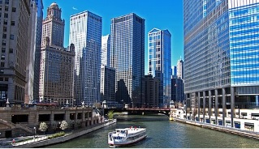Illinois é um dos 50 estados dos Estados Unidos, localizado na Região Centro-Oeste do pais. O Illinois é o sexto estado mais habitado do pais, com seu 12 812 508 habitantes. Cerca de 65% da população do estado vive na região metropolitana de Chicago.
Os Estados Unidos da América, ou simplesmente Estados Unidos ou América, são uma república constitucional federal composta por 50 estados e um distrito federal. A maior parte do país situa-se na região central da América do Norte, formada por 48 estados e o distrito de Colúmbia.
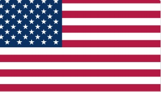O Canadá; em Francês: Canada, pronunciado: [kanada] é um país que ocupa grande parte da América do Norte e se estende desde o oceano Atlântico, a leste, até o oceano Pacífico, a oeste. Ao norte o país é limitado pelo oceano Ártico.
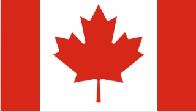Filipinas, oficialmente República das Filipinas, é um país localizado no Arquipélago Malaio, no Sudeste Asiático. O Arquipélago é delimitado pelo Mar das Filipinas a leste, Mar de Celebes e Mar de Sulu a sul e Mar da China Meridional a oeste.
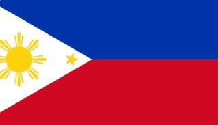A República Popular da China, também conhecida simplesmente como China, é o maior país da Ásia Oriental e o segundo país mais populoso do mundo, com mais de 1,4 bilhão de habitantes, quase um quinto da população da Terra, superado apenas pela Índia.
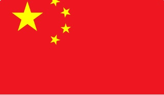Japão é um país insular da Ásia Oriental. Localizado no Oceano Pacífico, a leste do Mar do Japão, da República Popular da China, da Coreia do Norte, da Coreia do Sul e da Rússia, estendendo-se do Mar de Okhotsk, no norte, ao Mar da China Oriental e Taiwan, ao Sul.
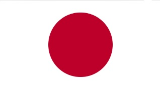Myanmar ou Birmânia, oficialmente Rupública da União de Myanmar, é um país do sul da Ásia continental, limitado ao norte e nordeste pela China; a leste pelo Laos; a sudeste pela Tailândia; ao sul e sudoeste pelo mar de Andamão e pelo golfo de Bengala; e a noroeste pelo Bangladesh e pela Índia.
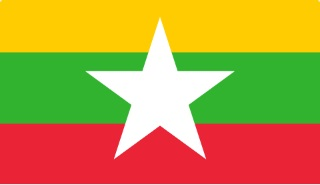A Índia, oficialmente denominada República da Índia, é um país da Ásia Meridional. É o país mais populoso, o sétimo maior em área geográfica e a democracia mais populosa do mundo. Delimitada ao sul pelo Oceano Índico, pelo mar da Arábia a oeste e pelo golfo de Gengala a leste.
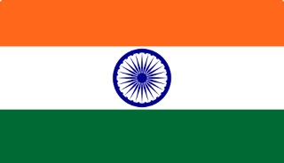México, oficialmente Estados Unidos Mexicanos, é uma república constitucional federal localizada na América do Norte. O país é limitado a norte pelos Estados Unidos; ao sul e oeste pelo Oceano Pacífico; a sudeste pela Guatemala, Belize e Mar do Caribe; a leste pelo Golfo do México.
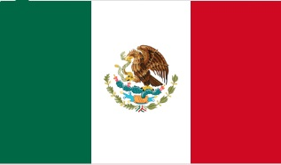Em 1913 o desenvolvimento do voleibol no continente asiático foi tão forte que, naquele ano, o jogo foi incluído no programa dos primeiros Jogos do Extremo Oriente, organizados em Manila. Note-se que, por um longo tempo, o voleibol foi jogado na Ásia de acordo com as regras "Brown" que, entre outras coisas, previa 16 jogadores (para permitir uma maior participação nas partidas).
Uma indicação do crescimento do voleibol nos Estados Unidos é dada em um artigo publicado em 1916 no Spalding Volleyball Guide e escrito por Robert C. Cubbon. Nesse artigo Cubbon estimou que o número de jogadores tinha atingido um total de 200.000 pessoas, subdivididos da seguinte forma: na ACM (meninos, jovens e homens mais velhos) 70000, na Associação Cristã de Moças (meninas e mulheres) 50.000, em escolas (rapazes e moças) 25.000 e nas faculdades (jovens) 10.000.
Em 1916 a ACM conseguiu convencer a poderosa National Collegiate Athletic Association (NCAA) a publicar as suas regras e uma série de artigos, contribuindo para o rápido crescimento do voleibol entre jovens universitários. Em 1918 o número de jogadores por equipe era limitada a seis e em 1922 o número máximo de contatos autorizados com a bola foi fixada em três.
Até o início da década de 30 o vôlei foi em grande parte um jogo de lazer e recreação e havia apenas poucas atividades internacionais e competições. Havia regras diferentes do jogo em várias partes do mundo; no entanto, os campeonatos nacionais eram realizados em muitos países (por exemplo, na Europa Oriental, onde o nível de jogo tinha atingido um nível notável). O voleibol tornou-se assim cada vez mais um esporte competitivo com desempenho físico e técnico elevados. (tendeu aí)
"Escolas" de Voleibol
Esta seção traz um breve relato sobre o estilo de jogo que as equipes adotam:
Escola do Leste Europeu - Beneficiada pelo porte físico de seus jogadores, este estilo prioriza o ataque forte com bolas altas e o excelente bloqueio. Dominou o voleibol durante muitos anos.
Escola Asiática - Inventada pelo Japão, este estilo de jogo é composto por muitas fintas e prioriza o ataque de bolas rápidas para suprir a menor estatura. Criaram o ataque conhecido como "Bola de Tempo", revolucionando o voleibol pela eficácia em ludibriar os bloqueios da tradicional escola europeia. Outra característica deste estilo é o forte sistema defensivo, o que faz com que os pontos sejam sempre muito disputados. Com este estilo de jogo, a Seleção Japonesa Masculina foi campeã olímpica em 72.
Escola Estadunidense - Na década de 80, a Seleção Estadunidense Masculina revolucionou a maneira de jogar, reduzindo o número de passadores para 2 ou 3, o bloqueador passou a interpretar para onde ia ser levantada a bola e o uso da estatística era um guia para ações do treinador.
Escola Cubana - Jogadores sempre fortes fisicamente, com extrema habilidade e um estilo sempre aguerrido.
Cronologia
Século XIX
1896 - Após uma demonstração a ACM de Springfield o nome "minonette" é subistituido por voleibol.
1898 - A Spalding Company inventou uma bola de vôlei.
1900 - As regras alteradas por W. E. Day são aceitas e publicadas pela ACM. A duração da
partida é de até 21 pontos;
* O Canadá é o primeiro país estrangeiro a adotar o voleibol.
Década de 1900
1906 - Cuba descobre o "voleibol de 6" graças a um oficial do exército norte-americano, Agusto York, que participava da segunda intervenção militar na ilha caribenha.
1908 - O voleibol chegou ao Japão. Hyozo Omori, um aluno de pós graduação da Faculdade de Springfield que primeiro demonstrou as regras do novo jogo nas quadras da ACM de Tóquio.
Década de 1910
1912 - O tamanho da quadra é alterado, tornando-se de 35x65 pés. A uniformidade de tamanho e peso da bola é estabelecida para uma circunferência de 26 polegadas e um peso de entre 7 e 9 oz. Duas outras inovações importantes: o número de jogadores em cada equipe é de seis e é decidido a rodar os jogadores antes do serviço.
1913 - O voleibol é colocado no programa para os primeiros Jogos do Extremo Oriente, realizados em Manila. As equipes eram compostas por 16 jogadores.
1914 - George Fisher, secretário do Escritório de Guerra da ACM incluiu o voleibol no programa de recreação e educação para as Forças Armadas americanas.
1915 - O número de jogadores em quadra mais uma vez torna-se variável, de 2 a 6 para cada equipe. O tempo oficial de jogo é introduzido e é decidido que o time que perder um jogo tem o direito de começar a servir no próximo jogo;
Na Europa o voleibol chega às praias francesas da Normandia e à Grã-Bretanha com os soldados americanos que lutavam na Primeira Guerra Mundial. Sua popularidade cresceu rapidamente mas o jogo criou raízes nos países do leste, onde o clima frio faz com que os ginásios esportivos se tornem mais atraentes;
Os primeiros dias da Primeira Guerra Mundial levam o voleibol à África. O primeiro país a aprender as regras é o Egito.
1916 - Muitas novas regras sejam estabelecidas. A pontuação atribuída a um "game" cai de 21
a 15 e é determinado que, para ganhar uma partida, uma equipe tem que vencer dois dos três "games". A bola agora pode ser batida com os pés de um jogador. A altura da rede sobe para 8 pés ou aproximadamente 2,43 metros, enquanto que o peso bola sobe de 8 para 10 onças. É decidido que segurar a bola é uma falta e o jogador não pode ter contato com a bola uma segunda vez até depois de ter sido jogada por outro atleta;
O voleibol se torna parte do NCAA, organismo que supervisiona os esportes universitários nos Estados Unidos.
1917 - Na base aérea das Forças Aliadas em Porto Corsini, onde hoje está localizado o Palácio de Esportes de Ravenna, os aviadores americanos introduziram o voleibol na Itália.
1918 - O número de jogadores por equipe é de seis;
No Japão é disputado o primeiro campeonato colegial.
1919 - Durante a Primeira Guerra Mundial, o Dr. George J. Fisher, como secretário do
Escritório de Trabalhos de Guerra da ACM, torna o voleibol parte do programa de treinamento militar em campos, tanto nos EUA como no exterior, nos manuais atléticos escritos para os responsáveis pelo desporto e lazer no Exército. Milhares de bolas e redes são enviadas ao exterior para as tropas dos EUA e também apresentou aos diretores do Exército Aliado de esportes. Mais de 16 mil bolas de vôlei são distribuídos em 1919 à Força Expedicionária Americana apenas. Os Jogos Inter-Aliados são organizados em Paris (mas o voleibol não foi incluído desde que o jogo não era conhecido ainda suficientemente nos 18 países participantes dos Aliados para permitir uma concorrência equilibrada);
Na China, as regras são modificadas. Os times passam a ter 12 componentes cada e com partidas acontecendo até 15 pontos.
Década de 1920
1920 - O tamanho da quadra diminui para 30x60 metros e é permitido jogar a bola por
qualquer parte do corpo acima da cintura. A maior inovação envolve a regra que permitia uma equipe para jogar uma bola no máximo três vezes antes de enviá-la por cima da rede;
As Filipinas desenvolver o primeiro tipo de ataque. É conhecida como a "bomba filipina" e é uma arma muito eficaz;
As primeiras tentativas espontâneas no bloqueio fazem o seu aparecimento, embora eles ainda não são codificados por regras.
Vôlei faz sua primeira aparição oficial na Rússia, nas cidades do Volga, Gorki e Kazan, e ao mesmo
tempo, em Khabarovsk e Vladivostok.
1922 - Os jogadores na linha de trás não estão autorizados a atacar. O "double hit" culpa é adicionado às regras. regras de pontuação também são alterados, desde que, com o placar em 14-14, dois pontos consecutivos são necessários para vencer.
O número máximo de contatos bola consecutivos por equipa é de três. A primeira federação nacional é fundada na Tchecoslováquia, rapidamente seguido pela Bulgária. O primeiro Campeonato Nacional é jogado nos EUA, em que as equipes só YMCA competir.
Vôlei ganha em popularidade também na Itália, graças a Guido Graziani, uma pós-graduação YMCA Springfield.
1923 - Uma equipe deve ser composta de 6 jogadores na quadra e 12 substitutos oficiais, e cada jogador tem de ter uma camisa numerada. A equipe de garantir o direito de servir tem que girar no sentido horário. O saque deve ser feita pelo jogador colocado à direita na linha de trás. Se um jogador toca a quadra do adversário durante o jogo é uma falta. Altura mínima do teto é de 15 pés.
A data oficial de nascimento de Voleibol na Rússia é fixado em 28 julho de 1923, o dia em uma partida entre a equipe masculina de alta Arte e Workshop de Teatro (Vhutemas) e Cinema Escola Técnica Estadual (GTK) é jogado em Moscou.
1924 - O programa dos Jogos Olímpicos em Paris, inclui uma demonstração de "americano" do desporto, com voleibol entre eles.
1925 - Dois tempos de espera por jogo para cada equipe passa a ser a regra. Há também uma mudança nas regras de pontuação para os jogos mais disputada: em 14-14 para ganhar já não é necessário para marcar dois pontos consecutivos, mas sim ter uma vantagem de dois pontos. Mais uma vez o peso da esfera é modificado, 9-10 onças.
O voleibol é jogado pela primeira vez na Holanda. Depois de uma estada no Seminário de Techny em
Illinois, EUA, Pai S. Buis introduz o esporte para a casa da missão Sint Willibrod em Uden e tem algumas quadras definido lá em cima.
1926 - Uma equipe reduzida para menos de 6 jogadores perde o jogo.
1927 - A Federação Japonesa nasce e nove competições masculinas são organizadas.
Na Rússia, há uma reação "político" do Partido Comunista contra o ACM como um "capitalista, burguesa e religiosa" da organização, e é obrigado a deixar o país. Mas Vôlei está aí para ficar.
China adota o sistema de nove jogadores por equipe, a mesma utilizada no Japão.
1928 - Nos EUA, a Associação de Voleibol é fundada sob princípios básicos YMCA como um esporte de lazer.
Em 1928, o Voleibol dos EUA organizou seu primeiro campeonato nacional.
1929 - Cuba organiza torneio os primeiros homens, de acordo com o "americano" regras no Caribe e América Central Jogos. Entre as duas Guerras Mundiais, grandes esforços são feitos para dar unidade ao movimento de Voleibol, estabelecendo um conjunto único de regras ea criação de uma federação internacional. Estes são apenas os esforços iniciais, com nada de concreto está sendo definida.
Década de 1930
1930 - O primeiro jogo de vôlei de praia para duas pessoas registrado foi jogado em Santa Monica, CA.
1932 - Time-outs são limitados a um minuto. Para fazer uma jogada, um atleta pode pisar fora de sua própria quadra, mas ele não pode mudar de posição na formação inicial.
1933 - O primeiro Campeonato Nacional de Volei da URSS é realizado, onde já existem mais de 400.000 jogadores. Para Soviética Vôlei, é o ano da consagração. Em janeiro, um desafio entre Moscou e Dnipropetrovsk é jogado em não menos importante do que uma etapa do Teatro Bolshoi.
Um livro intitulado "Vôlei: Jogo do Homem de Robert E. Laveaga, publicada pela AS Barnes & Co, de Nova York, faz um impacto importante sobre métodos de ensino e técnicas de formação científica. Vôlei feminino por Katherine M. Montgomery é também muito útil para o ensino do jogo.
1934 - Os primeiros passos concretos para estabelecer relações internacionais no Voleibol são tomados durante o Congresso da Federação Internacional de Handebol, em Estocolmo.
1935 - Cruzes são marcados no chão para determinar a posição do jogador. Tocando o líquido deve ser considerada uma falta. Uma regra importante envolve spikers: é proibido pisar fora do tribunal enquanto a bola está em jogo no lado do Spiker (ele tinha sido habitual para spikers à espera de um conjunto a ter um começo correndo de longe e depois saltar de uma pé). Em Tashkent e Moscou, a URSS faz o primeiro encontro oficial internacional contra o Afeganistão.
1937 - Vários contatos com a bola foram autorizados para se defender após ataques potentes.
1938 - Os tchecos criam o bloqueio que é oficialmente introduzido nas regras sob o conceito de "neutralização na rede por um ou dois jogadores ao lado." Por quase 20 anos antes, o bloqueio tinha sido uma parte do jogo, mas não foi escrito nas regras. Os tchecos são o primeiro (logo seguido pelos russos) para atribuir uma importância decisiva para a nova perícia, o que facilita a tarefa ingrata de voleio defesas.
1939 - Como a pressão para regulamentar de maneira homogénea em todo o mundo? O Relatório Anual de USVBA Guia de Referência e as Regras Oficiais do Jogo de Voleibol forneceu informações úteis sobre o jogo e proporcionou um fórum onde as experiências e ideias provenientes de diferentes fontes podem ser trocadas. Durante a guerra, milhares desses guias foram utilizados em todo o mundo.
Década de 1940
1940 - William G. Morgan, o criador do voleibol, morre aos 72 anos.
1941 - Em vários países, incluindo Itália, as experiências são feitas com um sistema de jogo cronometrado. Dois conjuntos de 20 minutos são jogados (com o tempo complementar em caso de empate). Mas depois de vários ensaios e prolongada, os experimentos são abandonados, mas retomada nos Estados Unidos no final da Segunda Guerra Mundial. Outra inovação é prazo de Voleibol, através do qual um jogo dura cerca de oito minutos de jogo real. Para vencer, um time tem que ter tanto uma vantagem de dois pontos no final dos oito minutos ou ser o primeiro a marcar 15 pontos. Mas mesmo aí, a ideia encontra pouca aceitação.
1942 - A bola pode ser tocada por qualquer parte do corpo, dos joelhos para cima.
Em todos os lugares do Pacífico Sul para a frente finlandesa, Voleibol atrai multidões entre as tropas envolvidas na Segunda Guerra Mundial, mesmo a bordo de aviões. Voleibol é recomendado por Chiefs of Staff para a formação das tropas, acreditando que os mantém em condição, reforça a moral, e ensina-os a ficar juntos como um grupo - algo essencial neste momento da guerra.
1943 - Durante o verão, o Sr. Friermood junta-se à gestão dos Estados Unidos YMCA e rapidamente torna-se Secretário / Tesoureiro da USVBA e trabalha em estreita colaboração com o Dr. Fisher, o seu Presidente. Através de contatos internacionais YMCA em mais de 80 países e também militares ao redor do mundo, as comunicações são estabelecidas e começam a produzir informações sobre ainterpretação e desenvolvimento do Voleibol e aqueles que estão a sua gestão. Correspondência com os gestores polonês durante a Segunda Guerra chama a atenção para os esforços do pós-guerra para estabelecer uma organização internacional de voleibol.
1945 - Primeiro selo postal em um assunto de Voleibol é emitido na Roménia.
1946 - Em janeiro, o Spartak de Praga vai jogar na Polónia, sinalizando uma retomada dos contatos após os anos de guerra destinado a criar uma organização internacional de voleibol. Por ocasião de um amistoso entre as equipes Checa e nacional francesa em 26 de agosto, é realizada uma reunião em Praga entre os representantes das federações da Tchecoslováquia, França e Polónia. A reunião, produz o primeiro documento oficial da FIVB futuro, com a criação de uma comissão para a organização da Federação Internacional, a promoção de um congresso constituinte, ea decisão de lançar um Europeu ou Mundial, numa data próxima.
1947 - Somente aos jogadores da linha de frente é permitido trocar posições para um bloco de dois-jogador e ponto.
O Egito é o primeiro país árabe e Africano para organizar as actividades de Voleibol e estabelecer uma Federação Nacional.
De 18-20 abril, em Paris, 14 federações encontrado a FIVB, com sede em Paris. O francês Paul Libaud é o primeiro presidente.
As regras americana e europeias de jogo são harmonizadas. A quadra passa a medir 9 x 18 metros e altura da rede será 2,43 metros para homens e 2,24 para mulheres.
Apenas na Ásia, as regras são diferentes: o tribunal tem de medir 21,35 x 10,67 metros, ea rede tem de ser alta 2,28 para homens e 2,13 para as mulheres, não há rotação de jogadores e na quadra há nove atletas organizados em três linhas.
1948 - O primeiro Campeonato Europeu reúne-se em Roma e venceu por Checoslováquia. Após a guerra, as regras foram reescritas e clarificada para tornar a interpretação mais fácil. Em particular, uma melhor definição é dada à ideia de bloqueio e serviço é limitado à direita terço do limite de corte para trás. Também é claro que cada jogador tem de estar em seu lugar correto durante o serviço; pontos obtidos pelo servidor errado devem ser anulados; contato simultâneo de dois jogadores devem ser considerados um; time-outs são para durar um minuto, enquanto de tempo, devido a lesão pode durar cinco minutos eo tempo de descanso entre um jogo e outro é de três minutos.
1949 - O primeiro Campeonato Mundial Masculino é realizado em Praga. A URSS é a vencedora. Esta é também a primeira vez que o levantador pode penetrar na linha de trás, levando a um ataque com três jogadores.
Década de 1950
1951 - Em seu terceiro Congresso, a FIVB decide que as mãos de um jogador pode "invadir" na rede durante o bloqueio, mas apenas na fase final de cravação. Além disso, um jogador de linha pode voltar-espiga, desde que ele permanece em sua zona e não passar para a linha de frente.
China começa a participar de torneios internacionais.
1952 - O primeiro Campeonato Mundial Feminino é realizado em Moscou. Assim como no masculino, o primeiro vencedor foi a URSS.
1953 - Em seu quarto congresso, a FIVB define a ação do árbitro e a terminologia.
A Federação Chinesa nasce.
1954 - A Confederação Asiática é fundada em Manila.
1955 - No Congresso da FIVB em Florença, a Federação Japonesa adota as regras
internacionais e compromete-se a introduzir gradualmente na Ásia.
O primeiro Campeonato Asiático é jogado em Tóquio, ambos 6 - e torneios 9 jogadores estão agendadas.
O voleibol é incluído no programa para o Jogos Pan-americanos.
1956 - Primeira edição do boletim oficial da FIVB é publicado. O primeiro verdadeiro globe-spanning Campeonato Mundial é realizada em Paris, França (com os homens de 24 equipes de quatro continentes). Checoslováquia Homens e Mulheres URSS ganhar os títulos cobiçados.
1957 - A consideração é dada à introdução de um segundo árbitro, duração de tempo limite é limitada a um minuto, 30 segundos. Durante a sessão do COI 53 em Sofia, Bulgária, de 22-26 setembro, um torneio de demonstração é tocada para os membros do COI, que então decidirá sobre a inclusão do voleibol sobre o programa para celebrar os Jogos Olímpicos XVII, em Tóquio, 1964.
1958 - Mais uma vez é os tchecos introduzem um novo tipo de defesa - o ensacador - o que espanta os espectadores no Campeonato Europeu, em Praga.
1959 - No Congresso da FIVB em Budapeste, foi decidido proibir o "screening" sobre o servir e para limitar a "invasão" na rede para a quadra adversária com o pé inteiro.
Década de 1960
1960 - Pela primeira vez, um Campeonato do Mundial Masculino é jogado fora da Europa, no Brasil.
URSS mais uma vez é a vencedora, como também faz no feminino.
1961 - A ideia de Mini Vôlei surge na Alemanha Oriental.
1962 - Os Campeonatos Mundiais são disputados em Moscou. No masculino, os Soviéticos confirmam o seu favoritismo. No feminino, as japonesas saem vencedoras.
1963 - A Confederação Europeia é fundada em 21 de outubro.
1964 - Novas regras para bloqueio são criadas: invasão de ar durante o bloqueio é proibida, enquanto que os bloqueadores é permitido um segundo estímulo.
O primeiro torneio olímpico de voleibol é jogado em Tóquio, durante os Jogos Olímpicos de Verão de 1964, com 10 equipes masculinas e seis equipes femininas. A medalha de ouro para os homens vai para a URSS, e as mulheres para o Japão.
1965 - A Primeira Copa do Mundo Masculina é jogado na Polônia, e vencida pela URSS.
1966 - O primeiro simpósio científico é realizada em Praga em ocasião do Dia Mundial dos homens campeonato, venceu por Checoslováquia.
1967 - O primeiro Campeonato do Continente Africano é jogado, e o Banco Africano da Zona da Comissão é procedente.
O Women's World Championship, agendado um ano depois de os homens, é jogado em Tóquio e conquistado mais uma vez pelas Japonesas.
1968 - Os tchecos criam a "manchete".
Teste: Limitar o espaço aéreo através da introdução de antenas.
A URSS levar para casa as duas medalhas de ouro olímpicas.
1969 - Uma Comissão de Treinadores é estabelecida.
A FIVB reconhece a sua quinta Continental Sport Zone Comissão NORCECA quando nasce no México, 26 de julho, com a fusão dos EUA, Canadá e outros países se juntam para formar o Norte da América Central e Caraíbas (Confederação NORCECA).
O primeiro Campeonato NORCECA acontece no México.
Década de 1970
1970 - O Campeonato Mundial é realizado na Bulgária. Vitoriosos são os homens da Alemanha Oriental e as mulheres da URSS.
1971 - Os primeiros cursos de treinamento com a chancela da FIVB são realizadas no Japão e Egito.
Uma Comissão Médica da FIVB é estabelecida.
Uma sub-comissão de treinadores para Mini Voleibol da FIVB é estabelecida.
1972 - As cinco Comissões Sports Zone (África, Ásia, Europa, NORCECA e América do Sul) se tornam Continental das Confederações.
Pela primeira vez a medalha de ouro para um país asiático. A equipe masculina japonesa, com uma tática de jogo de ataques velozes, ganha os Jogos Olímpicos de Munique, com os atacantes Necoda e Matsudaira. O torneio feminino é vencida pela URSS.
As regras oficiais de Mini Voleibol estão estabelecidos.
O primeiro Campeonato Sul-Americano Júnior acontece no Rio de Janeiro.
1973 - A primeira Copa do Mundo Feminina é jogada no Uruguai e conquistada pela URSS.
1974 - No Congresso da FIVB, na Cidade do México, foi decidido fazer duas alterações para ser colocado em vigor a partir de 1976: introdução das antenas, e permissão de no máximo três contatos com a bola após o bloqueio.
Durante o Campeonato do Mundo, a atleta polaca Wojtowicz surpreende a todos ao cravar da linha de trás. Na Cidade do México, Polónia ganha o ouro no masculino, enquanto que, em Guadalajara, o Japão conquista mais uma vez o título no feminino.
1975 - O primeiro simpósio de Mini-Voleibol é realizado na Suécia, com 19 países
participantes.
O primeiro Campeonato Asiático acontece na Austrália.
1976 - Nos Jogos Olímpicos de Montreal, a Polônia confirma sua liderança entre as equipes do masculino, e o Japão faz o mesmo entre as Mulheres.
Novas regras: Após o bloqueio, três contatos bola são permitidos, e a distância entre as antenas é
reduzido de 9,40 metros para 9 metros.
1977 - O primeiro Campeonato Mundial Júnior acontece no Brasil. Os vencedores no masculino e no feminino são, respectivamente, URSS e Coreia do Sul.
Kuwait organiza o primeiro Campeonato Árabe.
A Copa do Mundo é concedida ao Japão como base permanente para homens e mulheres, com vitória dos
soviéticos, entre os homens, e das japonesas, no feminino.
1978 - A Men's World Championship é realizada em Roma, com a URSS vencendo a Itália.
As mulheres jogam em Leningrado e é uma surpresa primeiro título mundial para Cuba, com Japão em 2o e URSS em 3o.
Década de 1980
1980 - Nos Jogos Olímpicos de Moscou, vitória dupla para a URSS.
17o Congresso da FIVB: as regras do jogo foram adotadas em três idiomas: Francês, Inglês e Espanhol.
1981 - Copa do Mundo em Tóquio: a URSS vitória para os homens e China para as mulheres.
1982 - A pressão da Bola é aumentada para 0,40-0,46 kg/cm2.
O World Women's Championship é realizado no Peru, onde, pela primeira vez, a China leva o título depois de um desempenho excelente e espectacular.
Campeonato mundial masculino (na Argentina) é vencido pela URSS.
1983 - Em 19 de julho acontece O Grande Desafio de Vôlei – Brasil X URSS no estádio do Maracanã, com o maior público da história do voleibol: 100mil espectadores.
1984 - O 19 º Congresso da FIVB é realizada em Long Beach, Califórnia, e, após 37 anos à frente da federação, o francês Paul Libaud torna-se presidente honorário. O advogado mexicano, Dr. Rubén Acosta H., é eleito como novo presidente.
Os EUA ganham ouro no masculino e a equipe olímpica das mulheres chinesas confirmam o ouro.
Nos Jogos Olímpicos de Los Angeles, a seleção brasileira masculina (medalhistas de prata) chama a
atenção por usar o saque viagem. A ideia não é nova (a Argentina já havia tentado em 1982 no Campeonato do Mundo), mas ninguém nunca a tinha utilizado de forma eficaz antes.
Depois de Los Angeles, já não é possível bloquear um saque, e a árbitragem se torna mais permissiva com a defesa.
Brasil faz uma partida amistosa contra os Estados Unidos, no estádio do Morumbi, em São Paulo. Na
ocasião, incentivado por um grande público, os brasileiros venceram por 3 a 0 em uma espécie de revanche da final dos Jogos Olímpicos de Los Angeles.
O primeiro Festival de Cinema Internacional de Voleibol é realizado em Perugia.
15 de dezembro: FIVB muda temporariamente de seu escritório, em Lausanne, enquanto prepara a sua sede permanente na cidade.
1985 - 28 de maio: pela primeira vez, um representante de Voleibol (FIVB Presidente Dr. Acosta) é nomeado para uma comissão do COI - a prestigiosa Comissão do Movimento Olímpico.
Copa do Mundo em Tóquio: A vitória vai para os Homens EUA, enquanto a China confirma a sua posição dominante entre as mulheres.
28-31 dezembro: o primeiro, Women's World Gala é jogado na China, (dois jogos em Pequim e Xangai). Um mundo All-Star desafios line-up o campeão olímpico na China, que ganha duas partidas da Copa do Hitachi.
1986 - Em Paris, EUA vencem o campeonato do mundo masculino. China confirma a medalha de ouro feminina em Praga.
O Vôlei de Praia recebe o status oficial da FIVB.
1987 - Nos dias 17 de fevereiro a 22 do mesmo mes acontece o primeiro Campeonato Mundial de Vôlei de Praia, que foi jogado em Ipanema, Brasil.
1988 - Em 06 de maio, a FIVB inaugura sua nova sede em Lausanne.
Os Jogos Olímpicos de Seul vê o número de equipes no torneio masculino aumentar de 10 para 12. Os EUA ganham a medalha de ouro dos homens, e no feminino, a URSS vence uma final dramática contra as Peruanas por 3x2, de virada.
O Congresso Mundial aprova a introdução de um sistema de pontos corridos no quinto set (tiebreak), em que cada serviço vale um ponto.
As pontuações finais por conjunto é limitado a 17 pontos com um ponto de diferença.
A primeira edição do Super Four FIVB é realizado no Japão, uma competição bi-anual entre os três
medalhistas dos Jogos Olímpicos (ou Campeonato Mundial). No primeiro Super Four, os homens soviéticos e chineses Mulheres re-afirmar a sua superioridade.
1989 - A campanha traz a primeira edição do Beach Volleyball World Series (o circuito mundial) e do segundo Mundial de gala em Singapura (homens e mulheres de todas as estrelas contra os campeões olímpicos).
Copa do Mundo no Japão: Cuba faz a dobradinha. A Itália fica com o segundo lugar no torneio masculino.
Entre os dias 06 e 10 de dezembro ocorreu o primeiro Campeonato Mundial de Clubes, jogado em Parma e conquistado pela equipe italiana do Maxicono.
Década de 1990
1990 - Primeira edição do Campeonato Mundial Masculino.
A fórmula de disputa da Copa do Mundo é alterada. Após a fase de qualificação, jogos eliminatórios até a final.
Itália vence os EUA e conquista a primeira Liga Mundial em Tóquio, no Japão, diante de uma multidão de 10.000 espectadores.
Itália derrota o Brasil no Rio de Janeiro e se torna o primeiro país da Europa Ocidental a ganhar a Men's Volleyball World Championship. URSS ganha o título no feminino contra a China, em Pequim.
1991 - A primeira edição do Mundial, o Women's Championship de Clubes é jogado no Brasil. O vencedor é a Sadia São Paulo.
Itália vence pela segunda vez consecutiva a Liga Mundial. A final foi em Milão, em frente de 12.000 espectadores, contra Cuba.
1992 - Barcelona aplaude a primeira conquista olímpica do Brasil (Masculino). No feminino, Cuba é a vencedora.
Depois de Barcelona, o desempate é modificado. Em 16-16, o jogo continua até que uma equipe logre uma vantagem de dois pontos.
Pela terceira vez a Itália vence a Liga Mundial, diante de 9.000 espectadores em Gênova, contra a
Holanda.
Brasil vence na Super quarteto masculino e Cuba no feminino.
1993 - Primeira edição do Grand Prix Feminino. Jogado inteiramente na Ásia e no final é vencida por Cuba contra a China.
A final da Liga Mundial é realizada em São Paulo e o Brasil conquista o título pela primeira vez.
Durante a sessão do COI 101 em Monte Carlo em 18 de setembro de Vôlei de Praia é admitida como uma disciplina medalha de ouro para o Jogos Olímpicos de 1996 em Atlanta.
Estreia de outro grande evento: o Grand Champions Cup é para ser tocada a cada quatro anos no Japão, alternando-se em anos ímpares com a Copa do Mundo, os participantes serão os campeões continentais. vencedores primeira medalha de ouro são a Itália, Homens e Mulheres de Cuba.
1994 - Itália vence pela quarta vez a Liga Mundial, batendo Cuba na final.
O Congresso Mundial, em Atenas aprova novas regras para entrar em vigor oficialmente em 01 de janeiro de 1995: A possibilidade de entrar em contato com a bola com qualquer parte do corpo, incluindo os pés, a zona de serviço estendido para toda a linha de 9 metros costas; eliminação do "double hit" falha no primeiro toque de uma bola vinda do campo do adversário, ea permissão para tocar a rede acidentalmente quando o jogador em questão não é tentar jogar a bola.
Os italianos ganhar a Men's World Championship pela segunda vez consecutiva, igualando um prêmio URSS anterior.
No Mundo das Mulheres Campeonato no Brasil, 26.000 espectadores, em Belo Horizonte assistir as partidas, estabelecendo um novo recorde para o evento das mulheres. Mais tarde, em São Paulo, 12.000 espectadores assistir Cuba ganhar seu segundo título mundial, desta vez em uma final contra o Brasil.
1995 - Voleibol comemora 100 anos. O aniversário é observada em todo o mundo, com
cerimônias de premiação, torneios e emissões de selos e carimbos especiais. A FIVB celebra o evento, que reúne "100 anos de Voleibol em 100 dias" em um calendário especial de eventos e publica um livro magnífico, "100 Anos de Link Global."
A Liga Mundial é mais uma vez conquistada pelos italianos. No Grand Prix, uma surpreendente vitória dos Estados Unidos.
Itália vence a Men's World Cup pela primeira vez no Masculino, e Cuba vence o feminino pela terceira vez consecutiva. Na Gala mundo, os homens italianos bater os All Stars e recebe a Copa Centenário de presidente do COI, Juan Antonio Samaranch.
1996 - Pela primeira vez o Volei de Praia participa dos Jogos Olímpicos.
Holanda e Itália fazem uma final histórica no Vôlei masculino dos Jogos Olímpicos. Liderada pelos irmãos Van Goor, a Holanda conquista a sua primeira medalha de ouro na história do voleibol.
1998 - Os homens e Women's World Championships, pela primeira vez ir para o Japão, e os melhores campeonatos da história do voleibol acontecem. Depois de partidas em 14 cidades, assistido por mais de 500.000 espectadores, e os maiores ratings de TV no Japão desde 1964 a ouro olímpico japonês para as mulheres, os italianos, liderados por Giani e Gardini, fazer história com o seu terceiro título consecutivo, derrotando a Iugoslávia. Cuba Mulheres, liderado por Regla Torres, defina o mesmo registro de três coroas para as mulheres, derrotando a Rússia.
O Congresso faz uma mudança histórica nas normas, a adopção do "Rally Point System" de 25 pontos para cada um dos quatro primeiros sets e um tie break de 15 pontos quinta definido para um período de teste de dois anos.
Introdução do Líbero.
Anos 2000
2000 - Os italianos conquistam sua oitava Liga Mundial, em 12 edições, ao derrotar a
Rússia.
No feminino, Cuba derrota Rússia mais uma vez, por 3-2, e conquistar seu terceiro ouro olímpico
consecutivo, estabelecendo um recorde de todos os tempos.
Após o fenomenal sucesso de Vôlei de Praia, durante os Jogos Olímpicos de Sydney, o Comitê Executivo do COI declara Beach Volleyball uma parte oficial do programa olímpico.
A FIVB elege os melhores do Século XX.
2001 - Vôlei de Praia é confirmado como um esporte olímpico.
2002 - A FIVB World Congress, em Buenos Aires adota um Código de Conduta e as regras contra os conflitos de interesse e introduz nas competições altura limite (185 cm para homens, 175 cm para mulheres).
Itália vence Mundial Feminino de Voleibol Feminino do Campeonato pela primeira vez em Berlim.
2003 - O Brasil Masculino vence todos os 11 jogos no Japão para a afirmação da FIVB World Cup pela primeira vez. Mulheres da China fazer o mesmo para ganhar seu primeiro título da Copa do Mundo.
2004 - Mulheres da China conquistar o título olímpico de voleibol em Atenas pela segunda vez após a sua vitória há 20 anos em Los Angeles. Homens do Brasil também ganha pela segunda vez, o seu primeiro título olímpico desde 1992.
2006 - Dr. Rubén Acosta é reeleito por unanimidade como presidente da FIVB pelos delegados representando 196 da FIVB 219 federações nacionais no 30 º Congresso Mundial da FIVB em Tóquio, Japão.
A seleção brasileira masculina defender sua coroa Campeonato do Mundo ao vencer a Polónia na final em Tóquio. Mulheres da Rússia ganhar seu sexto Campeonato do Mundo e seu primeiro desde 1990.
2007 - Homens do Brasil defender seus FIVB World título da Copa no Japão, enquanto as mulheres italianas ganhar seu primeiro título da Copa do Mundo.
Brasil vence a Liga Mundial vence pela quinta vez consecutiva e alcança seu sexto título, no geral.
Os Países Baixos ganhar o World Grand Prix, em Ningbo, na China, seu primeiro troféu na competição FIVB principais. Os europeus se tornar a sexta equipe a vencer o título feminino de renome anual e executar snap Brasil é de três triunfos em linha reta.
2008 - A FIVB abre novas instalações do "Château Les Tourelles", em maio, um prédio lindo junto ao Lago Genebra, em Lausanne, na Suíça.
O 31 Congresso Mundial da FIVB ocorre em Dubai, Emirados Árabes Unidos, em junho.
EUA Homens ganhar a Liga Mundial antes da coroação de um ano magnífico com o ouro olímpico em Pequim.
As mulheres brasileiras fazem o casal, assim: o ouro olímpico após o primeiro lugar no Grand Prix.
Dr. Rubén Acosta faz anunciou sua aposentadoria oficial da Presidência da FIVB, no final do Congresso Mundial. Fica acordado que o Sr. Jizhong Wei da China, da FIVB Primeiro Vice-Presidente Executivo, é para assumir a liderança da organização, como Presidente, eleito por unanimidade, até as próximas eleições em 2012, de acordo com a decisão do Congresso para seguir outra vez em quatro anos tempo do ciclo de Olimpíada.
2009 - o Brasil a conquistar seu oitavo campeonato do Mundo em que a derrota da Sérvia, em Belgrado, em uma partida vibrante assistido por uma multidão de 22.000 espectadores, enquanto o Brasil também pegar o World Grand Prix, terminando acima da Rússia e da Alemanha.
Mulheres da Itália acompanhar a sua Copa do Mundo de 2007 ganha seu primeiro com a alegação FIVB World Grand Champions Cup no Japão como o Brasil a conquistar a competição masculina.